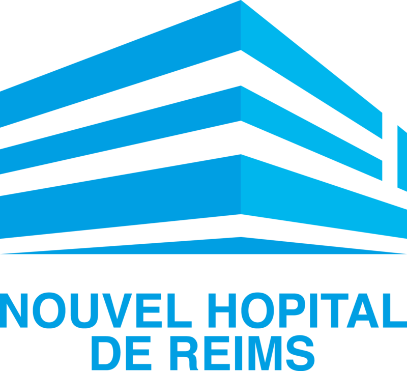

 Lieu : CHU de Reims, service biomédical
Période : Du lundi 24 mai 2021 au 25 juin 2021
Présentation de l'entreprise :
- Établissement public établissement hospitalier
- En activité depuis 43 ans (créée le 01-01-1978)
- Entre 5000 et 9999 salariés
- Budget principal de 533 327 989 €
- Dépense de 528 330 994 €
- => bénéfice total de 4 996 995€
- A investit au total 35 999 681 € dont :
- 3 457 448 € en informatique
- 8 596 429€ en équipements médicaux
- 23 945 804€ en travaux
L'informatique dans l'organisation
L'établissement contient :
- 1300 serveurs
- 544 ordinateurs
- 966 bornes Wifi
- 7 250 points réseaux autour de l’Hôpital
La GMAO (Gestion de maintenance assistée par ordinateur) :
- permet de faire un inventaire des équipements (localisation, gestion d’information et type d’équipement
- permet la gestion des maintenances correctives et préventives ainsi que la gestion des interventions des différents techniciens.
- contient le stock des dispositifs médicaux afin de pouvoir réapprovisionner convenablement et dans les délais nécessaires
- permet la gestion des coûts et budgets de l’établissement.
GMAO utilisée au CHU de Reims :
- AssetPlus par Healthcare
- Logiciel de GMAO qui répond aux besoins des services biomédicaux, techniques et informatiques des hôpitaux